The motivation behind making this project was as follows. From a very long time I was interested game development, I have found that the best way for me, to learn a new language or tool is to build a complete, working game with it.
Qiskit was no different. I started learning it two years before I built this project. And this project was made in summer of 2025. When learning this language (obviously along with the theory of Quantum computing), I came across this video. And this triggered me to make one of my own version. But one thing that disappointed me was that what they had made wasn't the usual tic tac toe. Most projects that i came across had implemented Quantum Tic Tac Toe, which is an entriely different game at all. I'm not saying their project was not impressive. If that was the case, I would never had tried making this one in the first place. But what I saw was an opportunity. "Is it possible to make a fully functional Tic Tac Toe game (the usual one) using quantum circuits?". And then started my journey of "Tic Tac Toe with Feynman". Also, I don’t claim this to be a unique idea; this is simply my attempt at creating it.
Although, making this project did not take more than 10 days but this idea and the mental framework of how will I exactly implement the logic in the code took a very long time. In fact, more than a year. And it was a wonderful experience to build this project.
I am writing about this project six months after I actually made it. Now I agree I see some flaws in the project and things that may seem impossible to implement via quantum computing, but this clarity of what’s possible and what’s not came only after I made the first attempt. So I hope it is understandable if my ideas sound immature.
Ideas
Now it was about coming up with suitable ideas. In my mind I had a vague problem statement. And it was: let's say for a moment that the Tic-Tac-Toe program is created and let's assume it as a black box, then here is what I would want the black box to do. Arush is playing "X" and he makes the move. The board will then be converted to some numbers which will be then encoded into a qubit state. And then this qubit state goes into a quantum circuit.
Now if I zoom out and look at any quantum circuit, I see that they take the initial state, apply some computation on the state and this can make the state no longer be the same one; in fact, the state can change into multiple states at the same time, and might proceed further into the quantum circuit.
After the computation I measure the result and the state should be a classical bit string. Now when the bit state is converted to numbers and then when the numbers are again converted to a human-understandable Tic-Tac-Toe board, it should be such that the computer has played its move and now it's my turn to play my next move. So this was the idea.
So when learning about quantum computing I came across two of the most famous quantum algorithms and they are Shor's Algorithm and Grover's Algorithm. Although at that time when I was thinking about making this game I knew about them, but was never able to understand them fully. This was also the time when I was making my own chess bot, and I knew that classical Tic-Tac-Toe engines used something called Alpha-Beta Minimax Algorithm. This, I believe, is an optimized version of something even more simple, which is the British Museum Algorithm. And the algorithm is very trivial and obvious to think of when making games like these. In simple words this algorithm makes a tree of all the possible next moves and all their consequences in the game, and then compares every branch, and picks the best move out of it.
A simple example could be that I have the game of Tic-Tac-Toe and I made a blunder, so in the next move let’s say by placing an "X" at a certain location the computer is winning the game. Now the computer algorithm will place an "X" at all the locations possible and then will search for the best move. And there will certainly be a place where when "X" is placed the computer is winning, so it will pick that move from all the possible game states where the "X" was placed at places other than this, and will play the move (and also winning the game). This is British Meuseum Algorithm.
Now if we think of this in terms of a quantum circuit, this is actually possible. From a basic understanding of quantum computing we know that a Hadamard gate can put the state of a qubit into superposition of all the possible states that the qubit can be in. So in the later section I will elaborate on how I tried to implement this idea to make the game tree using quantum gates.
Assuming we can form a superposition of all possible board states after I play "O" (that is, all board states resulting from placing "X" in every legal position), this is the stage where Grover’s Algorithm becomes necessary.
After creating the superposition of all the states, I could actually construct the second layer of the tree, which involves determining where to make my next move. This could be achieved by further applying the Hadamard gate in some clever ways. However, this was not what I originally had in mind back then. For now, I have only explored the first depth of the tree. (If you are familier with chess engines, it means to have the depth of chess engine set to 1 for analysis)
Implementation
Now it is time to finally explain the code. The first step is to represent the Tic-Tac-Toe board programmatically, which I did as follows. I have divided the explanation into three parts:
Encoding and decoding the Tic-Tac-Toe game into quantum states and vice versa
Constructing the oracle circuit
Implementing Grover's Algorithm
Encoding and Decoding
I mean, if I were a quantum circuit, all I need is a quantum state, which is nothing but a bunch of qubits in maybe superposition, which is nothing but being in a state where they are in multiple states at the same time. And then I can perform my task of running the quantum circuit. So, in this part, my task was to make the quantum states using the Tic-Tac-Toe table.
So, for the purpose of this documentation, I am going to take this game state as an example.
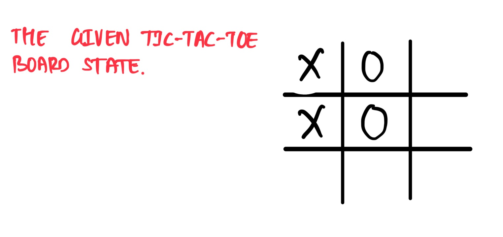
Game State Example
Not to mention, an encoding scheme must be such that it provides a one-to-one mapping of the states. This means I must be able to create a unique list of numbers for every unique board state.
First I have named the symbol "X" and "O" and "." (Unoccupied) as 2,1,0 respectively. And then I have set the order of the boxes as shown below.
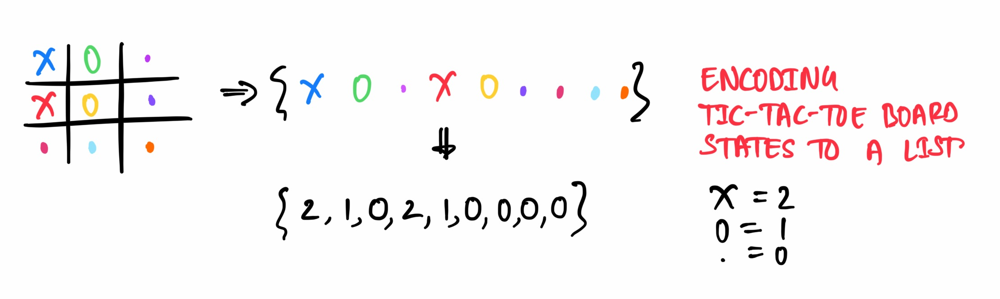
Encoding Board to list of numbers
And once that is done then the next step to encode these numbers to qubit states.Now here it was imporatnt to note that each box on the tic tac toie game can be in three possible states and since each measurable bit could be in two states (0,1), I have taken two qubit to represent state of the one square of the tic tac toe game.I made the following convention:
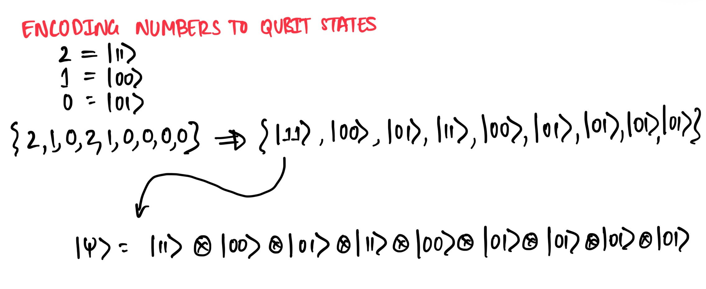
Encoding numbers to Qubits
So now I have a way to create the qubit states from the a tic tac toe board.
The figure below summarize the realtion between the squares of tic tac toe board and the qubit numebr that gets mapped on it
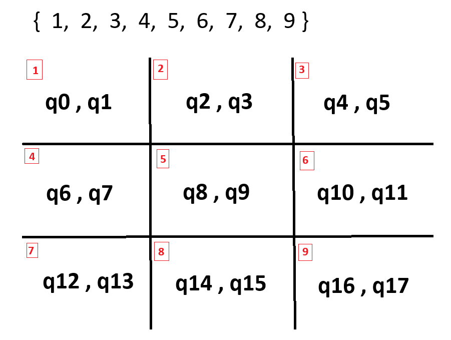
Now lets make some things clear. I have choosen the state of tic tac toe as an example (which is the list {2,1,0,2,1,0,0,0,0,0}), hoping that in the next move computer wins. In the project, I am assuming that {2,1,0,2,1,0,0,0,0,0} is the game state currently and I have already played my turn ("O"). Now it's computer's move to play. And I am hoping it would play the best move which in this case would be {2,1,0,2,1,0,0,1,0}. (Since this maps to the board where O is placed consecutively in 2nd column).
So the way I did it programatically is as follows:
I create a list called m = [2,1,0,2,1,0,0,0,0],and this will be the state of the board intially
All the qubits are initalised with |0> state, so oracle function was made which has the ancilla qubit, and it turns on, only when the board state is {2,1,0,2,1,0,0,0,0} (which is the input board state).
And for that reason I will have to apply the unity gate at pairs of qubits which are |11> (Which represents the number 2 which means the state "X") and NOT gate at the pairs of qubit which are in the state |00> (Which represents the number 1 which means the state "O") and one unity and one NOT at pairs of qubit which are |01> (Which represents the number 0 whcih means the state ".").
For the states that we are intrested in, this is the circuit that will be formed. So the First two qubit which is q_0, and q_1 whci is the first box of the tic tac toe is 2 in our case and thus this means thatv we want the 0th and 1st qubit ot be one, and only then the ancilla qubit has to be turned on. This is not sufficient since other qubits also has to contain the apopropirate information about the state of the game but it is neccesary that the first qubit has to be |11>
Likewise the second qubit has to be |00> since it maps itself to 1 and that means "O" on the tic tac toe board. Adn this condition can be used by applying two NOT gate on both th equbit. That way only at times when the q_2 an q_3 are |00>, will activate the ancilla qubit. Again neccesary but not sufficient.
Lets take another exmaple. Here in the third box which maps to the q_4 and q_5, we see that it's zero, which maps to |01> and hence to check for this case we could assing NOT gate on the q_5 which will turn the 5th qubit 1 and IDENTITY gate on the 4th.
Now to be able to make the function that can do that (take the list of numbers and generate this oracle circuit), prepare_empty_cell function was made which takes in an empty list and the string m and fill in all the number of qubit which has to be marked as empty. In our case it's [4,5,10,11,12,13,14,15,16,17]
Now the function make_board will use the index of qubit that are empty and the ones that are not (might be occupied with "X", or "O") and genarate the oracle fuction out of it.
Things to note about this oracle function is that for any give list m, (which we have mapped using tic tac toe board), it will create an oracle circuit. And this oracle circuit will have an extra qubit which ius seen as the 18th qubit (0 to 17th are for the board state), which will turn on (1) only when the valid board in present in the states of superposition.
The below diagram shows how the circuit looks for this case.
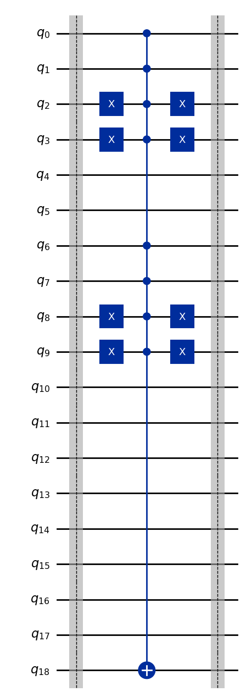
Now the main idea is to use the hadamrad gate apply it to the 18 qubit system. And this will generate 2^18 unique tic tac toe board states which will contain the all the possible staes of tic tac toe and some other non disirable staes as well.
So there are are 9 squares in tic tac toe game and each square can have four possible states of two qubit system |00>, |01>, |10> amd |11>, three of whcih we are using (|00> for "O", |01> for "." and |11> for "X"). But since hadamard gates is used all the possible states will be created and will be put into equal superposition. Since there are 4 states in each square and 9 squares in total so total of 4^9 states will be created in total all put in an equal superposition. (Which means if these quantum state were to be measuered right now every state present in those 4^9 states can come out as the result with exactly equal probablity). I am stressing on this fact, because much later I realsied that it made the computation much more expensive. We will talk about this in the next section.
So the idea is to make the superposition of 18 qubit and then letting it through the orcale function that we have talked about and this oracle will act as an indicator which will attach a indicator qubit |1> to the state that the board is in at the time it is sent.
I named this oracle "Given Board"
Bunch Of Oracles
Now the way, I proceeded was as follows. I have made multiple orcale fucntion and each one of them served a purpose. Applying the hadamard gate intially would generate a ton of states (Actually all the states and also some undesirable ones). And then as said before i made the first oracle to filter out the board that contained the "X" and "O" and "." at the right position as given. Note that I dont check what is there is there at the positiuon other than that."
So we had the state m = {2,1,0,2,1,0,0,0,0}, and the oracle function only checks if there is 2,1 present in the right location. Rest of all the locations of qubit will be left as blank, since that has to to be checked by the computer.
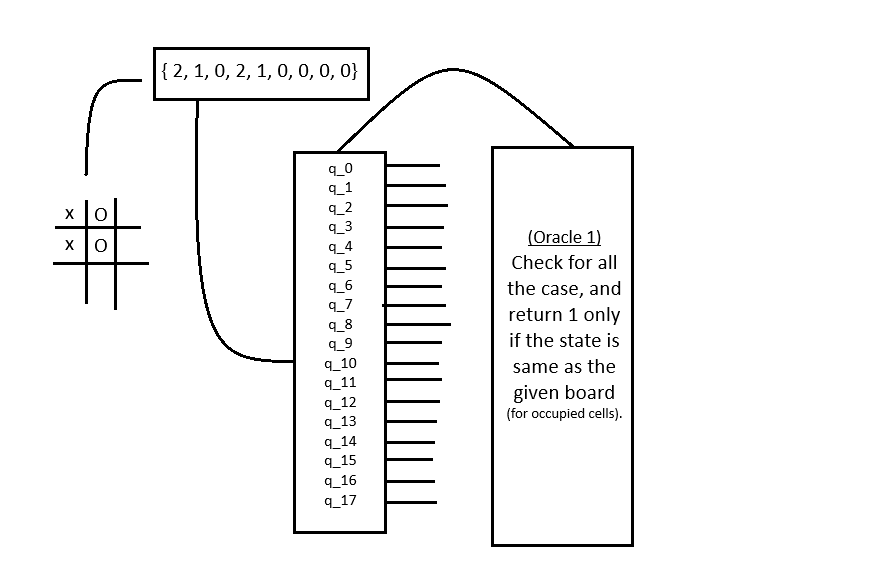
Game_Generator Oracle
Now this oracle fucntion was about placing each x in the right position. So let me explain this withy an example. So we have m = {2,1,0,2,1,0,0,0,0}. And So we first place the "X" in the one of the blank space and ensure that the other blank spaces are empty and then we place X at some other location and ensure that other places are left empty and this will go on till all the empty cells are filled with one "X" and others empty cells are left empty.
What we are doing here is that we are creatign a game tree. This will be the first move of the computer and the computer is picking up the cases that will place one X at each point. I like to think of it in this way that if there is a ton of states generated by the hadamard gate and I am ensuring that the occupied states are filtered by the "Given Board" function the part where we place the "X" which is played by the computer at all the Unoccupied location is filtered by the "Game tree" oracle function. To get the location of the qubit which represents the unoccupied states we have already created the list called empty_cell.
Now after applying this oracle function we have filtered out the superposition of states where there is a "X" in only one unoccpuied square, and the rest are still unoccupied. Another thig to note is that the "Given Board" oracle was used to filter the position that are occupied and the "game tree" oracle is used to filter out the position that are unoccupied.
Figure given below explains the working of this oracle function for our case of m = {2,1,0,2,1,0,0,0,0}.
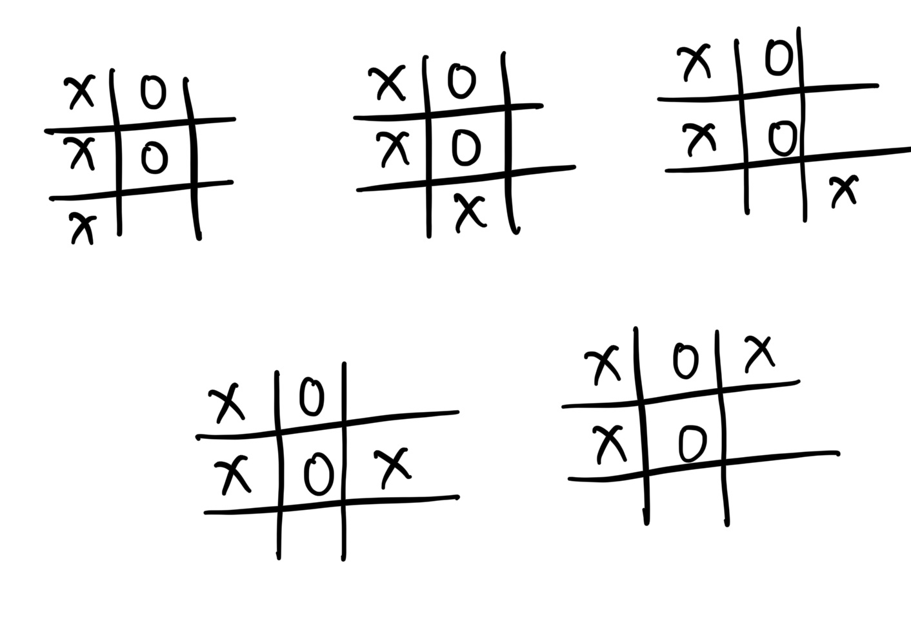
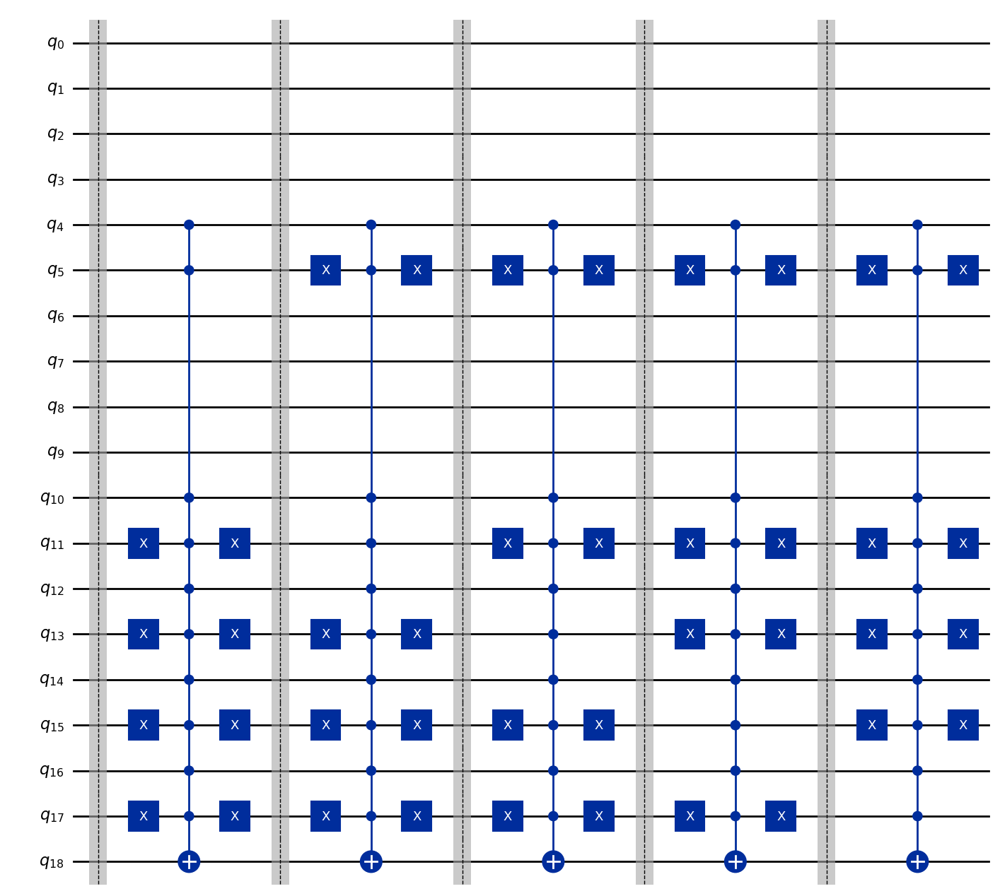
Game Tree Oracle
Note that here each stae will have it corresponding ancilla. So for one state the ancilla could be one and for other it might be zero. And the second thing to note is that there can be no one bopard state which satisfy multiple cases considering it's state only at the unoccupied states.
X_Win Oracle
This is the oracle function that is used to filter out the cases where the X wins. So this could be countabke number of ways.
I would like to say that this orcale is independent of the game states and will always be the same.Because it simply checks if the state of the board is such that it it has three "X" present in the row or diagonal. Below Figure expalins this
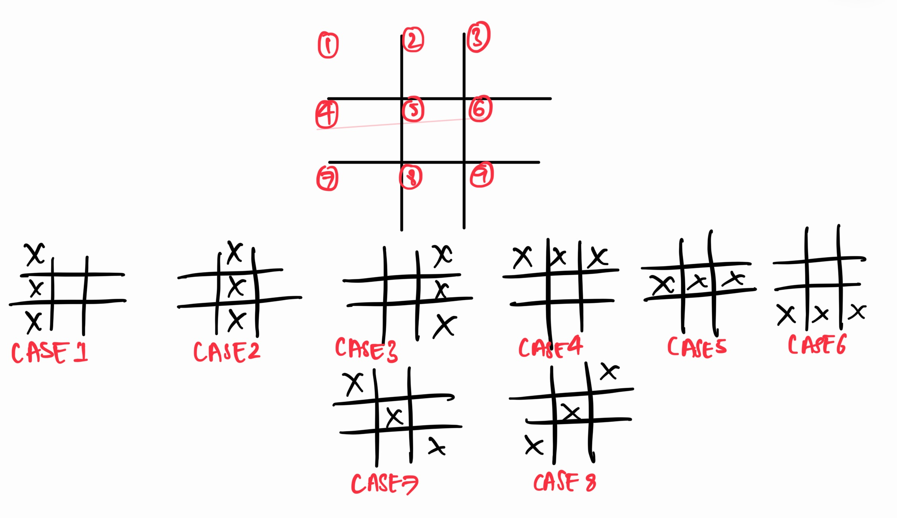
Board Visualisation of X Wins Oracle
And once this is done it could be used to make the circuit whcih is shown below
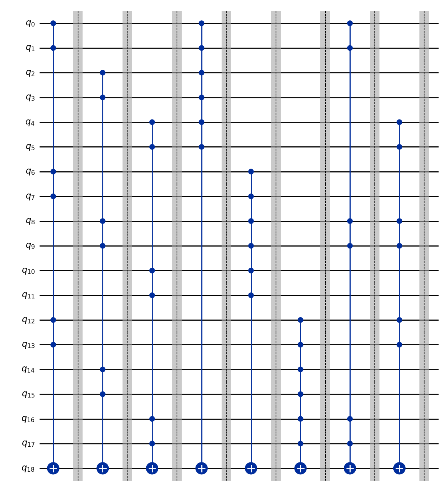
X Wins Oracle
Note that we are simply checking if the row which is the qubit index [ (0,1), (6,7), (12,13) ], [ (2,3), (8,9), (14,15) ], [ (4,5), (10,11), (16,17) ](being some of the exmaple for vertical X row) are filled with X. And since X was represented by |11> we do so by applying the IDENTITY gate and then registering the ancilla qubit.
Again, an important thing to note here is that all the oracle that I have mentioned above will not genrate the desribale result indiviually. And same goes with this. This board will contain results that are not at all desirable. But we will explain it in a movement.
This orcale function will be called X wins
The following diagram will make it better to understand the workflow of all the oracle functions that we have discussed.
Stop O from winning
Let me recollect everything that the circuit has done till now. We first had the superposition of all the possible states of the tic tac toe game which aslo contained some irrelevant states (because of the extra state |10> that we are not using),and also mnay other states which are simply not possible (like all the squares filled with |00> or |11>). Applying hadamard will not spare anything and will make the superposition (equal superposition) of all the states possible.
Then we have applied the first oracle fucntion which will tell us which of the states of the board are the one, that has correct position of the "X" and "O" that were already occupied at the time of inputing the states into the computer by the player. So if I played the "0" move such that m = [2,1,0,2,1,0,0,0,0], and I send the string to the program, it will create the quanutm circuit (Given Board Oracle) which has the job of marking (by making the ancilla qubit |1>) the state of 17 qubit system only when it has correct occupied states. (Rest of all the states will be marked as |0>).
And after that the second oracle function will identiy the states which will form the valid next step of the computer. So here A computer can make the move in five ways by making
m = {2,1,0,2,1,0,2,0,0}
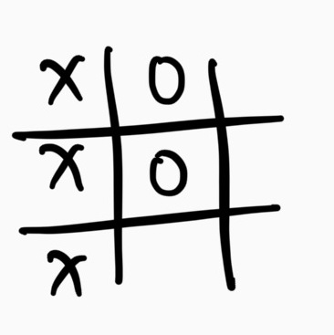
m = {2,1,0,2,1,0,0,2,0}
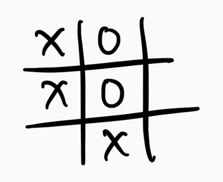
m = {2,1,0,2,1,0,0,0,2}
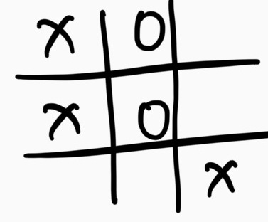
m = {2,1,2,2,1,0,0,0,0}
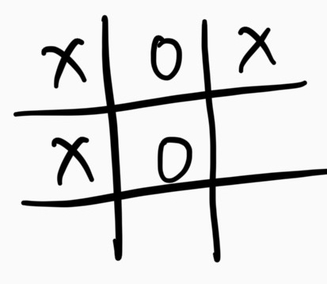
m = {2,1,0,2,1,2,0,0,0}
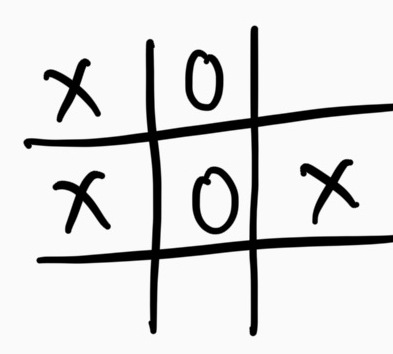
And all the states which has these configuration of the unoccupied stated will be be marked whcih the ancilla qubit.
One important thing is that this orcale function will also depend on the state of the board and thus will be created at run time. And this will keep on changing as the game proceeds.
And lastly the X_win orcale function will be such that it marks all the states that has X in a row or column. And as said earlier this doesnt mean it will always pick the right state since this will also contain many other nonsensicale states of the board.
Now if I understand the above oracle functions in a flow, i can realise that it is not always neccesary to find a move which ofcourse will be valid (meaning has all the states before making the move as it is), and has just one move where all the "X" are in the row. In other words the game can not always be at the movement where we could find just one move after which X wins. Take the starting positiuon for example. I paly the move by placing "O" at the center, now the computer can not immediately find just one move by placing the "X" and win. So the third oracle function which is X_win is not sufficient. I will also have to make the oracle which will handle the case where the computer is not winning in the next move. And there comes the idea of "If I can not win then I should stop the opponent from winning". In other words if winning is not possible, then try not to lose.
This oracle does the exact smae thing. Now one thing to note here is that this oracle (just like the X_win oracle) is independent of the input. Which means this will stay as it is for all the inputs and will not change.
stop_o_from_winning oracle function will mark all the states when X has blocked O from winning. And when i though about this I realised that also is countable .Some thing like whats shown below.
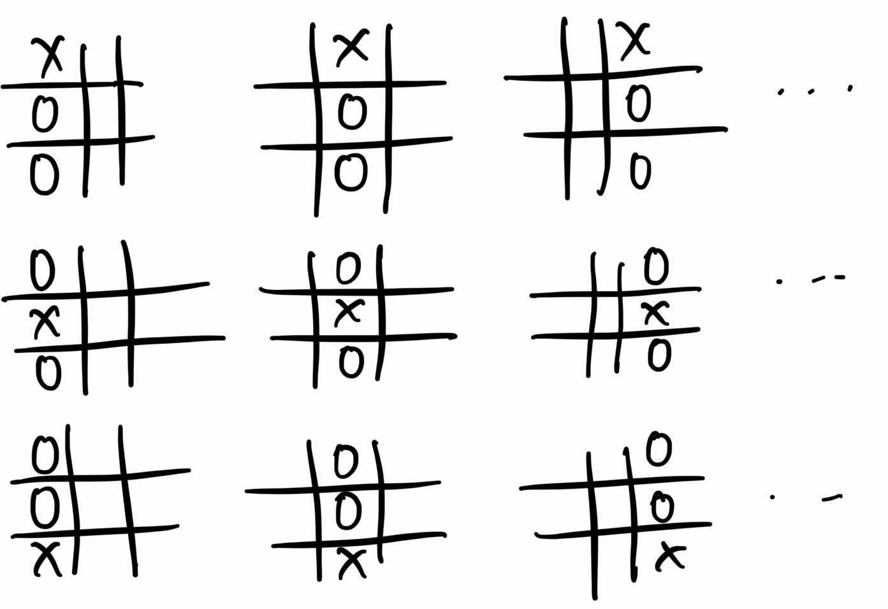
What the circuit does is just checks if there is a possiblity that any of the condition present above is satisfied or not. And the circuit for the above argument is given below.
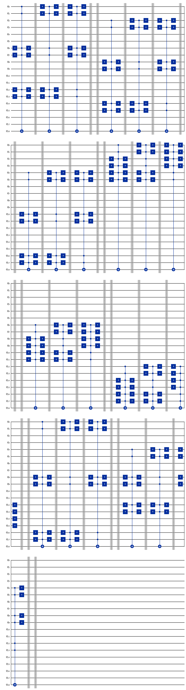
Again what this does is simply checking if the condition for blocking the "O" with an "X" is possilbe or not. And this circuit as said earlier, will remain independednt of the input since it checks for all the possible cases for "X" to block the "O" not leting it win. Remember "X" is computer and "O" is the computer.
Now comes the part of this oracle section.A nd that is to make the grand oracle fucntion
So we have till now made four oracle fucntion each of whcihbhas there own ancilla qubit which is used as an indicator. Or a way for the oracle to indicate or mark a state, for which it is made for. And we intially had 18 qubit so now the total count of the qubit will come up to 18 + no. of oracle fucntion (since each oracle fucntion has it's own ancilla qubit) which is (18+4) which is 22.
Now lets come back to the our exmaple. I say that the next game played by the computer must be such that it is one of member of the game tree (We have 5 possiblity for "X" to be placed so the next move played byt he computer has to be one of those). And secondly, I will first see if X wins in the next move. If yes I will make that move. Ig no, then I will see if I can make a move to stop "O" from winning. If yes then i will make the move and stop o from winning. If no, then I can actually play any move from the 5 posssibility that i had.
And this summarises the whole project. Now the first two oracle function that is Given_Board and Game_tree are the ones which will filter out the states that are present in the valid next move for the valie game state. So if the ancilla of Given_Board is A and that of Game_tree is B then the state that we will be considering further in the circuit must have A=1 and B=1. So them to be the valid states. And this could be assumed as AND of A and B. SO lets call the ancilla for (A AND B) to be C.
And after getting the superposition of all the possible next moves we will pass them from X_wins and stop_o_from_winning and lets assume the ancilla qubit for the above functions to be D and E. Now what i am saying is
->_if(C){
->___if(D){
->____make_the_winning_move();
->____return 1;
->___};
->___else if (E){
->____stop_o_from_winnign();
->____return 1;
->___};
->___else{
->______make_some_random_valid_move();
->___};
}
The circuit shown below will perform the same taks of taking the above logic and this will make our final oracle function.
And this in the form of circuit could be seen as this
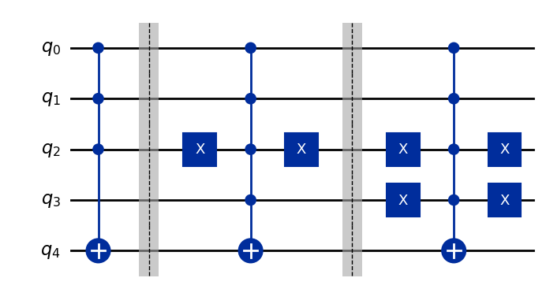
Now with the addition of this new oracle function we have also added a new ancilla qubit and this makes the total could of qubit to be 23. And now we could finally move towards making the grover's algorithm.
I am going to name this Final ancilla as TIC TAC TOE ANCILLA, and this will be used to finally mark the state that we are looking for, which is favorable to make the X win. And this final circuit will be named as Conditional Circuit.
So just to be clear, we will initilaise the circuit of 17 qubit system with hadamard and all the above oracle will be applied to all the states. And then finally we will be able to mark those perfect states which we want in the next move using the above oracle and the conditional circuit which we aaply after applying Oracles.
The final circuit till now is given below.
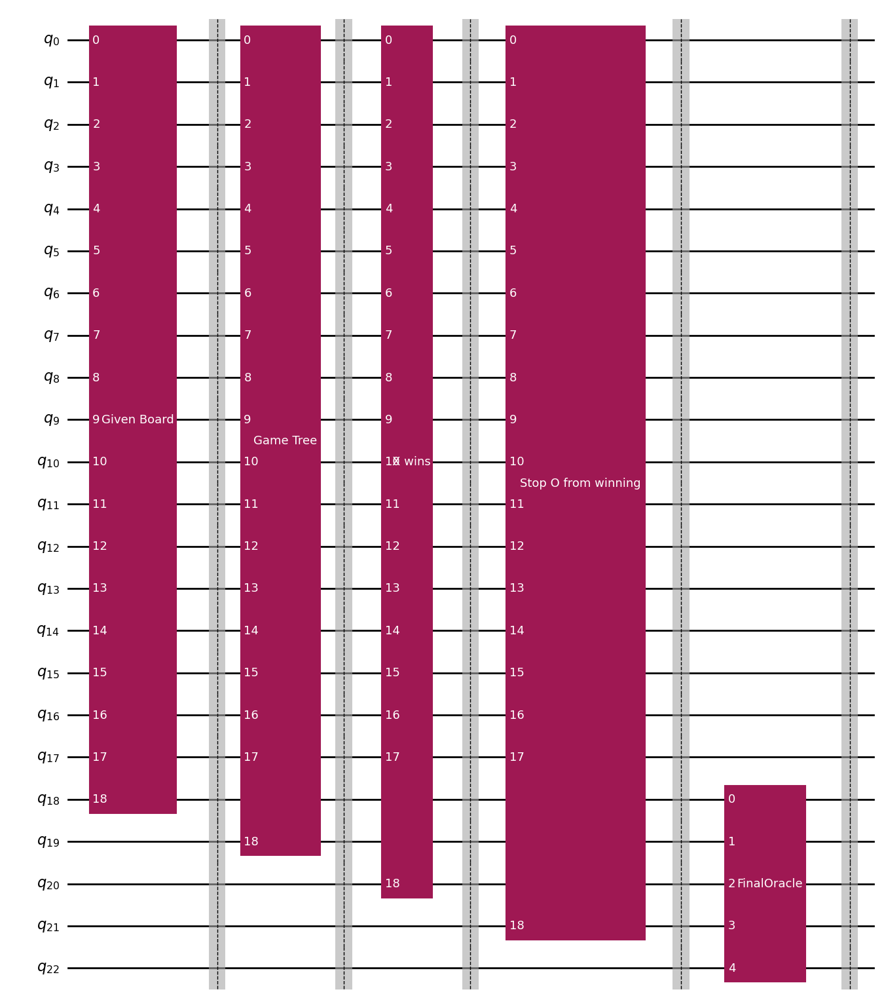
Grover's Search Algorithm
So now just to keep it simple I am asssuming that I have the 17 qubit system and I am applying the grover's algorithm on it. So now here I am not going to explain the theory behind this beautiful algorithm, but it is a way to amplify the amplitude of the states that is marked. In the project I have 23 qubits, and now the 23th qubit is the one which will be used for the marking. First 18 were to represent the game state and the rest from 19th to 22nd are from the oracle functions that we already had.
A Grover's search algorithm circuit requires us to have a Diffuser circuit and an oracle. The final oracle which provides us with the ancilla equal to |1> is already present. And the diuffuser circuit which applys to the inpuit states is given below
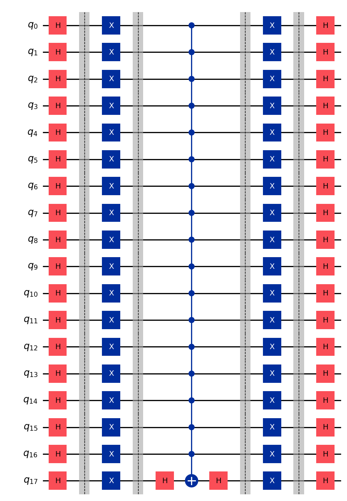
So now could be assumed to be the finale of the whole project. Given below is the figure which explains the grover's algorithm for a simple oracle function on three qubit system.
Let's go one by one and try entangling the threads. Firstly we had all the qubtis used to represent the board and all the required ancilla qubit ready with |0> states.
And then we apply the hadamard gate to all the 18 qubit we had and this will create the equal superposition of all the Tic-Tac-Toe board that we could possibly have. The qubit number 18, 19, 20, 21 are the one used as ancilla qubit for Given_Board oracle, Game_tree oracle, X_win oracle and Stop_o_from_winning oracle. And the 22nd qubit is used as the final anncilla which is used in the conditional circuit. And this is how we make the oracle function.
Then we make the Grover Diffuser which will be applied to the above 18 qubit only..
Once this is done we could apply the oracle and diffuser alternatively for some N number of times to amplify the amplitude of the circuit as we want. And from the formula:
\(\frac{\pi}{4}\sqrt{N}\)
we could see for \(N = 2^{18}\) the value of grover iteration needed is 402! Circuit where the grover's iteration is done for three times is given below:
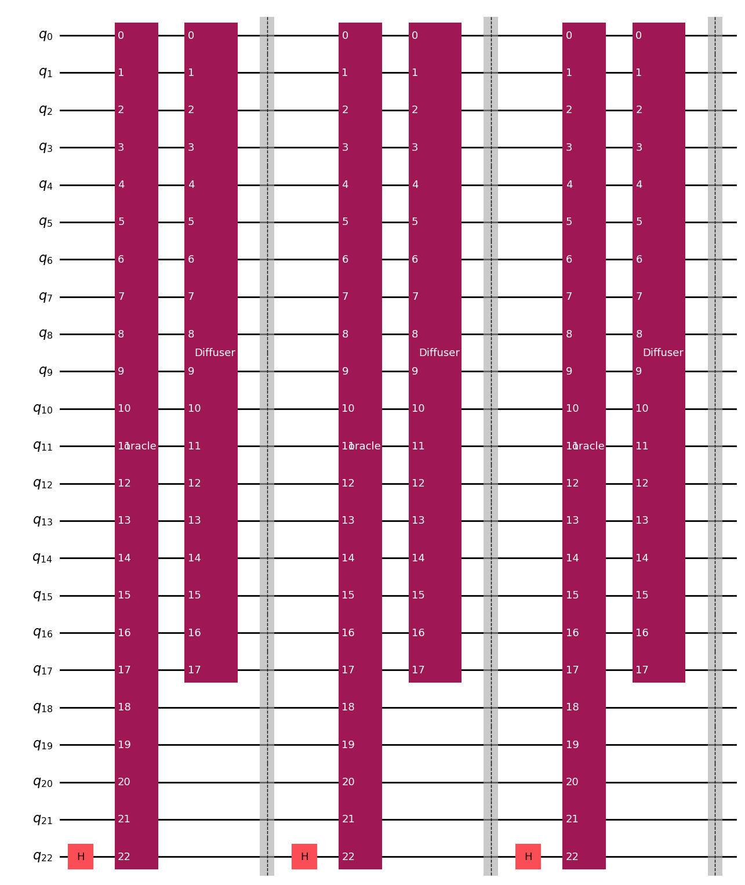
Adn after all the interation of grover's circuit is over we could measured. And the final circuit is shown below.
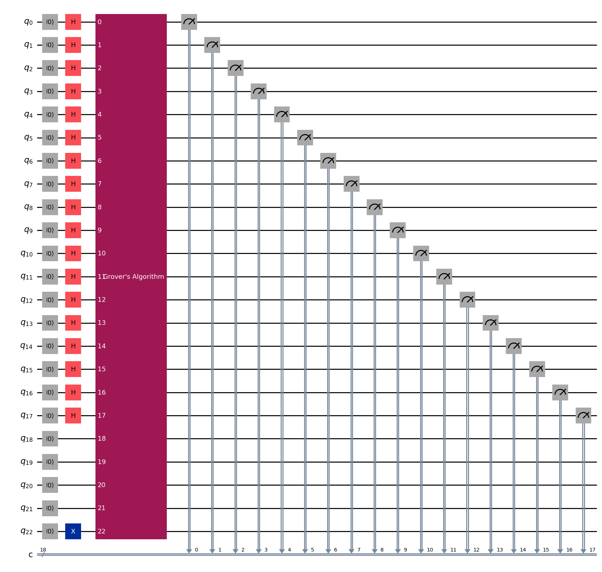